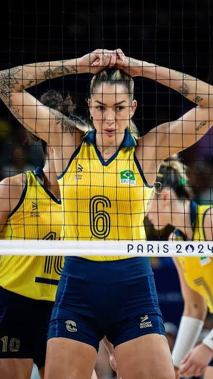

Duas vezes ouro olímpico. Uma carreira de recordes na rede.
Nascida no Rio de Janeiro em 15 de maio de 1987, Thaísa é uma das centrais mais dominantes da história do vôlei mundial — dona de um bloqueio implacável, um ataque conhecido como "china" e uma trajetória de mais de duas décadas em quadra.

Aos 14 anos, Thaísa trocou a timidez de uma adolescente muito alta pela confiança que só a quadra dá. De lá para cá, vestiu a camisa de clubes como Minas, Rexona/Ades, Osasco e Eczacıbaşı, e ajudou o Brasil a conquistar os ouros olímpicos de Pequim 2008 e Londres 2012. Este site reúne sua história, carreira, passagens por clubes, trajetória na seleção, títulos e estatísticas.
Origem, infância, superação e a mulher por trás da atleta.
02História, clubes por onde passou, linha do tempo e principais momentos.
03Times atuais e anteriores, temporadas e títulos conquistados por clube.
04Convocações, competições disputadas e títulos com a amarelinha.
05Olimpíadas, Mundiais, Grand Prix, Sul-Americanos, Superligas e mais.
06Números, recordes e o que os define como uma das melhores centrais do mundo.
Criança muito alta para a idade, Thaísa sofreu bullying na infância. Foi na quadra que transformou a altura que a incomodava em sua maior arma — hoje ela é reconhecida como uma das melhores bloqueadoras da história do esporte.
Ver todas as curiosidades →